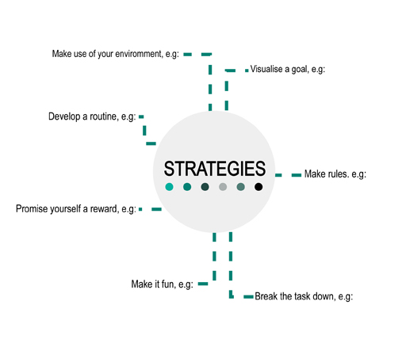

7 Overcoming obstacles¶
It would be unrealistic to think that you will sail through your language-learning journey without ever encountering any obstacle or any of the barriers we’ve talked about. What is important is to be prepared so that you can recognise these barriers and overcome them.
Here is a mindmap of strategies to deal with obstacles you might encounter.

Figure 5 Mindmap (adapted from Hadfield and Dörnyei, 2013, p. 70)
Activity 5 Deciding on strategies to overcome obstacles¶
Timing: Allow about 5 minutes
Question¶
Read the following situations, and decide which strategy is being used in each case:
‘To learn vocabulary, I walk around my house naming the rooms, the furniture and the objects in my home in my foreign language.’
Promise yourself a reward.
Make use of your environment.
Question¶
‘I used to get to the end of the day and realised I hadn’t done any language studying, so now I get up 15 minutes earlier and make sure I start every day with 15 minutes of language learning. I do this Monday to Friday. At the weekend, I spend one hour after breakfast.’
Develop a routine.
Studying my language.
Question¶
‘When I have done what I set out to achieve in a particular week, I treat myself to something nice.’
Promise yourself a reward.
Break the task down.
Question¶
‘I love music, so I find songs in my target language and sing along to them.’
Make it fun.
Develop a routine.
Question¶
‘Because I get distracted easily and I tend to procrastinate, I close my email and my social media apps before I start studying. Unless I’m specifically using a language-learning app, I put my smartphone out of sight! I only allow myself to look at my email and social media after I have finished my study session.’
Make rules.
Make it fun.
Question¶
‘When I sit down to study, I break the session into three parts. First I spend a few minutes reviewing what I did in my last session, then I work on one main task (such as reading a text, listening to a longer piece of audio, or working on my grammar). This takes up most of the study session. Then I like to finish the session by doing something fun, such as revising some vocabulary, or watching a short video.‘
Break the task down.
Make use of your environment.
Question¶
‘Before I start my study session, I think of what I will have achieved at the end. This helps me to stay motivated.’
Visualise a goal.
Promise yourself a reward.
Activity 6 Thinking about your own obstacles and strategies¶
Timing: Allow about 30 minutes
Question¶
Now think of what issues you are likely to face when learning your language, and what strategies you might use to deal with each situation.
You might want to print out the mindmap in Figure 5 and write your ideas on it.
Try to think of a situation for each type of strategy, and write them down.